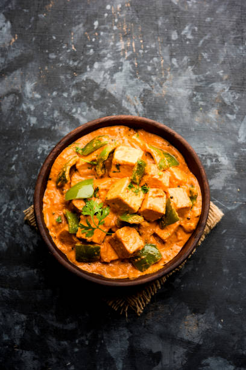

Aloo Prantha
Punjabian Di Shaan
D View RecipeAloo Prantha
Here's a step-by-step guide to making Aloo Ka Paratha:
Step 1: Prepare the Dough
<<<<<<< HEAD
Mix Flour and Salt: In a mixing bowl, combine 2 cups of whole wheat flour and a pinch of
salt.
Add Water: Gradually add water, mixing with your hands, until the dough comes together.
Knead the Dough: Knead the dough for about 5-7 minutes until smooth. Optionally, you can
add a tablespoon of oil for softness.
Rest the Dough: Cover the dough with a damp cloth and let it rest for 20-30 minutes.
Serve hot Aloo Ka Parathas with yogurt, pickle, or chutney.
Enjoy your delicious homemade Aloo Ka Paratha!
=======
>>>>>>> cbb631f (Initial commit)
Watch Video
Watch Video
Mutter Paneer
Some example text some example text. John Doe is an architect and engineer
View Recipe

Kadhi Pakoda
Some example text some example text. John Doe is an architect and engineer
View Recipe
Dal Makhni
n Indian Dish made up of rice and cummin seeds.
View RecipeDal Makhni
Here’s a step-by-step procedure to make Dal Makhni:
Step 1: Prepare the Lentils
Soak the Lentils:
Soak 1 cup of black lentils (urad dal) and 1/4 cup of red kidney beans (rajma) in plenty
of water overnight.
Step 2: Cook the Lentils
Drain and Rinse:
After soaking, drain and rinse the lentils and kidney beans.
Pressure Cook:
In a pressure cooker, add the soaked lentils and kidney beans along with 4-5 cups of
water.
Add salt to taste and a pinch of turmeric powder.
Cook for about 15-20 minutes or until they are soft.
Step 3: Prepare the Base
Sauté Onions:
In a large pot or heavy-bottomed pan, heat 2-3 tablespoons of butter over medium heat.
Add 1 teaspoon of cumin seeds and let them splutter.
Add 1 medium onion (finely chopped) and sauté until golden brown.
Add Ginger, Garlic, and Green Chilies:
Stir in the grated ginger, chopped garlic (4-5 cloves), and slit green chilies (2).
Sauté for a couple of minutes until fragrant.
Cook Tomatoes:
Add 2-3 medium tomatoes (pureed or finely chopped) to the pot.
Cook until the tomatoes are soft and the oil starts to separate, about 5-7 minutes.
Step 4: Combine Everything
Add Cooked Lentils:
Add the cooked lentils and kidney beans to the tomato mixture.
Stir well to combine.
Adjust Consistency:
Add water as needed to achieve your desired consistency.
Simmer the dal on low heat for at least 30-40 minutes, stirring occasionally. This
enhances the flavors.
Step 5: Add Spices and Cream
Season:
Add 1 teaspoon of red chili powder and 1 teaspoon of garam masala.
Adjust salt if needed.
Add Cream:
Stir in 1/2 cup of cream for richness and let it simmer for another 10-15 minutes.
Step 6: Final Touches
Garnish:
Just before serving, add a little more butter and garnish with chopped fresh coriander
leaves and additional cream if desired.
Step 7: Serve
Enjoy:
Serve hot with naan, roti, or steamed rice.
Enjoy your delicious Dal Makhni!
Watch Video

Watch Video